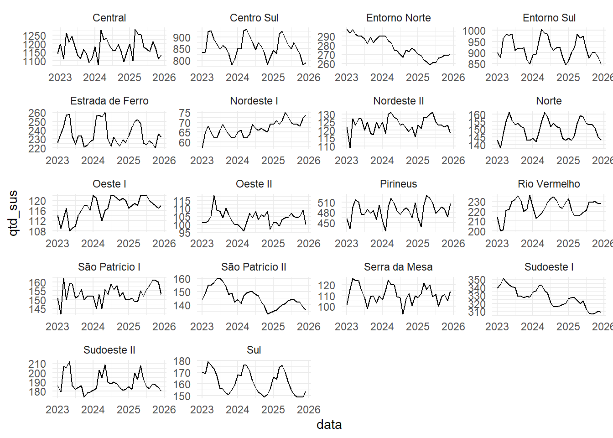
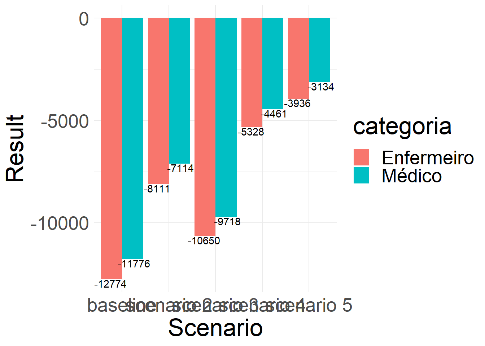
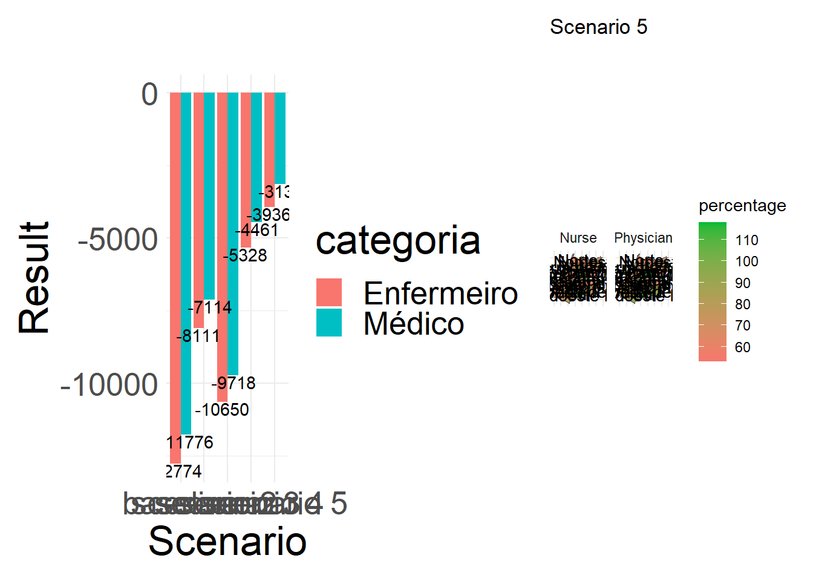

library(tidyverse)
library(readxl)
library(geojsonio)
library(broom)
library(jsonlite)
library(RODBC)
library(patchwork)
library(geobr)Needs-based health workforce planning for pregnancy care in Brazil
Introduction
This supplementary material describes the methodological procedures, as well as documents the codes, based on R language, used for the analysis.
We adapted Asamani et al. (2021) orientations in order build a needs-based health workforce planning for Brazilian context.
Asamani et al. (2021) suggest a set of six consideration that researchers should follow when developing needs based workforce planning, which are:
Defining the scope - defining jurisdictional coverage, health system objective and timeframe.
Analysis of the population health service needs - population demography, health status, level of service
Translating the evidence-based service requirement into health workforce requirement - matching health services with competent professionals, eliciting measures of productivity
Exploring resource implications - comparing demand and supply, cost implications)
Conducting sensitivity analysis - perform simulation according to parameter uncertainty or policy scenarios
Conducting model validation - compare to previous experiences and stakeholder consultation
The following flowchart presents the main stages.
Preparing R environment
Before making any progress, we need to load the R libraries that will assist performing our analysis.
1 - Defining Scope
The jurisdictional coverage was health regions of Goias state. Goiás is in the middle-west of Brazil. The objective of analysis was targeted to registered nurse (RN) and physician health workforce planning for pregnant and newborn in the primary healthcare (PMC). We employed demand forecasts for the following two years using artificial intelligence algorithms.
The following figure illustrates Goiás state’s location.
dataset <- list_geobr()
states <- read_state(
year=2019,
showProgress = FALSE
)
states <-
states |>
mutate(marcar = factor(if_else(abbrev_state == "GO", "1","2")))
# Remove plot axis
no_axis <- theme(axis.title=element_blank(),
axis.text=element_blank(),
axis.ticks=element_blank())
# Plot all Brazilian states
cores = c("lightblue","lightgray")
a <- states |>
ggplot() +
geom_sf(aes(fill=marcar), color="#2D3E50", size=.15, show.legend = FALSE) +
theme_minimal() +
scale_fill_manual(values = cores) +
no_axis
a
The following figure illustrates the 18 health regions of Goiás state.

2 - Analysis of population health service needs
Each pregnant will require a set of services during pregnancy and after delivery according to recommendation of Brazilian Minister of Health. The same happens for the baby as soon as it is born.
\[ NHS\underset{r,t}{} = SD\underset{r,t}{} \times (H\underset{r,t}{} \times \sum_{t = -8}^{36}L\underset{y,t}{}) \tag{1}\]
where:
- \(NHS\underset{t}{}\) represents the total programmatic services needed address each the health status in a health region r in a given time t.
- \(SD\) represents a percentage of population which dependent of Brazilian Health Unified System (Sistema Único de Saúde - SUS) in a given health region r and t.
- \(H\underset{r,t}{}\) represents the health status - births - for each month t and a region r.
- \(L\) represents the number of services of type y required for each pregnant or baby in given time t before and after the child birth. The index goes from -8 to 36 because each month has programmatic services dedicated to either the pregnant woman (from t = -8 until t = 1). The same happens for the baby, starting from the month it is born t = 0.
2.1. Health Status (H) and SUS dependent population (SD)
This chunk of scripts shows how the number of monthly births for each health region.
#reading and selecting variables
predictions <- read_excel("~/GitHub/dimensionamento/05_Gestantes/05_python/previsoes_go.xlsx") |>
select(codibge, data, qtd) |>
mutate(qtd = round(qtd))
# reading health insurance data
health_insurance <- read_csv("~/GitHub/dimensionamento/05_Gestantes/05_python/beneficiarios_plano_saude.csv") |>
filter(mes == "06") |>
mutate(perc_sus = (100 - percentual_pop_coberta)/100) |>
select(cod_regsaud, perc_sus, regiao_saude)
# joining both dataframes to deduce the population covered by health insurance
predictions <-
predictions |>
left_join(health_insurance, by = c("codibge"="cod_regsaud")) |>
mutate(qtd_sus = round(qtd * perc_sus)) |>
mutate(data = as.character(data))
glimpse(predictions)Rows: 649
Columns: 6
$ codibge <dbl> 52001, 52001, 52001, 52001, 52001, 52001, 52001, 52001, 5…
$ data <chr> "2022-12-01", "2023-01-01", "2023-02-01", "2023-03-01", "…
$ qtd <dbl> 2228, 2337, 2170, 2465, 2361, 2429, 2311, 2211, 2176, 227…
$ perc_sus <dbl> 0.5125, 0.5125, 0.5125, 0.5125, 0.5125, 0.5125, 0.5125, 0…
$ regiao_saude <chr> "Central", "Central", "Central", "Central", "Central", "C…
$ qtd_sus <dbl> 1142, 1198, 1112, 1263, 1210, 1245, 1184, 1133, 1115, 116…Number of monthly births according to health region.
predictions |>
mutate(data = ymd(data)) |>
ggplot(aes(x = data, y = qtd_sus)) + geom_line() +
facet_wrap(~regiao_saude, scales = "free",
ncol = 4) + theme_minimal()
2.2. Estimating services (S)
For each birth we quantified the number and types of procedures needed to assist pregnant women and the newborn in the primary health care (PHC) setting.
There is a technical note - produced for SUS - which describes the type and frequency of procedures women are supposed to get each month before and after child birth.
The number and variety of health procedures needed for each pregnant were calculated using an API developed for this project. The API reads the number of births in a given health region (variable ibge) according to the variable qtd_sus and calculates the number of procedures for previous and subsequent months for pregnant women and newborn.
for(i in 1:nrow(predictions)){
row <- predictions[i,]
url = paste("http://200.137.215.27:5025/calcula_procedimentos?mes_ano=",
substring(row$data, 1, 7),
"&nascidos_vivos=",
round(row$qtd_sus, 0), sep = '')
temp <- fromJSON(url)
temp$data <- row$data
temp$qtd <- row$qtd_sus
temp$ibge <- row$codibge
servicos <- rbind(temp, servicos)
print(paste("Chamando:",url))
}This dataframe has 11 variables
colnames(services) [1] "codigo_sigtap" "mes"
[3] "parametro" "procedimento"
[5] "tipo_procedimento" "Público"
[7] "nivel_atencao" "quantidade"
[9] "mês_procedimento_realizado" "data"
[11] "qtd" "ibge" where:
ibge: code that identifies each health region
data: date of birth
qtd: number of births
procedimento: name of the procedure of type y
mês_procedimento_realizado: month when procedure of type y is programmed to be performed
codigo_sigtap: code used by SUS to identify the procedure of type y
parametro: the number of procedures of type y is needed according in a given month (mes)
mes: programmed month of procedure, which varies from -8 (second month of gestation) to 36 (child consultation in the 36th month of life). Zero represents the month of birth.
tipo_procedimento: type of procedure (consultation, vaccine, exam, delivery, educational action)
publico: target audienct (mother, newborn, high-risk pregnant woman)
nivel_atencao: level of service (primary care, secondary care)
Since our objective is primary care, we filtered only procedures performed in this level of service.
# filter just PHC setting
phc_services <- services |>
filter(nivel_atencao == "APS")
glimpse(phc_services)Rows: 49,628
Columns: 12
$ codigo_sigtap <dbl> 301010110, 301010137, 202020355, 202020380,…
$ mes <dbl> -8, -7, -7, -7, -7, -7, -7, -7, -7, -7, -7,…
$ parametro <dbl> 1.0, 1.0, 1.0, 1.0, 0.5, 1.0, 1.0, 1.0, 1.0…
$ procedimento <chr> "Consulta pré-natal", "Visita domiciliar", …
$ tipo_procedimento <chr> "Consultas ou Visitas", "Consultas ou Visit…
$ Público <chr> "Todas gestantes", "Todas gestantes", "Toda…
$ nivel_atencao <chr> "APS", "APS", "APS", "APS", "APS", "APS", "…
$ quantidade <dbl> 1135.0, 1135.0, 1135.0, 1135.0, 567.5, 1135…
$ mês_procedimento_realizado <date> 2025-04-01, 2025-05-01, 2025-05-01, 2025-0…
$ data <date> 2025-12-01, 2025-12-01, 2025-12-01, 2025-1…
$ qtd <dbl> 1135, 1135, 1135, 1135, 1135, 1135, 1135, 1…
$ ibge <dbl> 52001, 52001, 52001, 52001, 52001, 52001, 5…3 - Translating the evidence-based service requirements into health workforce requirement
According to Asamani e al. (2021), this step includes matching skills and competencies with interventions needed and eliciting workload measures. Asamani et al. (2021) uses concepts from the Workload Indicator of Staffing Needs (WISN).
3.1. Matching skills and competencies with interventions needed
The phc_services dataframe contains the codigo_sigtap variable. This variable represents a procedure and will be used to join with a second dataset which identifies the health professional who are able to perform the procedure.
# loading dataframe which combines procedures and the respective professional
procedures_professional <- read_excel("~/GitHub/dimensionamento/05_Gestantes/05_python/calendario-procedimentos.xlsx",
sheet = "procedimentos_profissionais") |>
select(codigo_sigtap, categoria, CBO) |>
mutate(codigo_sigtap = as.numeric(codigo_sigtap)) Procedures performed by two cadres will be split equally among them. Prenatal consultation, for example, can be performed by either RN or physician, so 50% of the procedure volume will be allocated for both professionals.
Mackenzie et al. (2019) introduces a W parameter in the demand equation to represent the proportion of the services made by a given cadre.
# the procedure 301010080 is growth and development consultation. It is divided by 10 because the same procedure id is used for all procedure.
qtt_professional <-
procedures_professional |>
group_by(codigo_sigtap) |>
count() |>
mutate(n = case_when(codigo_sigtap == '301010080' ~ n/10,
codigo_sigtap == '101010010' ~ n/2,
TRUE ~ n))
# In the following code:
# 1) filter for only procedures performed by nurses and physicians
# 2) calculate the number of procedures exclusive by cadre according to the last code
professional_services <- phc_services |>
left_join(qtt_professional, by = "codigo_sigtap") |>
mutate(qtt_cadre = quantidade/n) |>
left_join(procedures_professional, by = "codigo_sigtap") |>
filter(categoria == "Enfermeiro" | categoria == "Médico")
glimpse(professional_services)Rows: 149,537
Columns: 16
$ codigo_sigtap <dbl> 301010110, 301010110, 202030300, 202030300,…
$ mes <dbl> -8, -8, -7, -7, -7, -7, -7, -7, -6, -6, -6,…
$ parametro <dbl> 1.0, 1.0, 1.0, 1.0, 1.0, 1.0, 1.0, 1.0, 1.0…
$ procedimento <chr> "Consulta pré-natal", "Consulta pré-natal",…
$ tipo_procedimento <chr> "Consultas ou Visitas", "Consultas ou Visit…
$ Público <chr> "Todas gestantes", "Todas gestantes", "Toda…
$ nivel_atencao <chr> "APS", "APS", "APS", "APS", "APS", "APS", "…
$ quantidade <dbl> 1135.0, 1135.0, 1135.0, 1135.0, 1135.0, 113…
$ mês_procedimento_realizado <date> 2025-04-01, 2025-04-01, 2025-05-01, 2025-0…
$ data <date> 2025-12-01, 2025-12-01, 2025-12-01, 2025-1…
$ qtd <dbl> 1135, 1135, 1135, 1135, 1135, 1135, 1135, 1…
$ ibge <dbl> 52001, 52001, 52001, 52001, 52001, 52001, 5…
$ n <dbl> 2, 2, 2, 2, 2, 2, 2, 2, 2, 2, 2, 2, 2, 2, 2…
$ qtt_cadre <dbl> 567.50, 567.50, 567.50, 567.50, 567.50, 567…
$ categoria <chr> "Enfermeiro", "Médico", "Enfermeiro", "Médi…
$ CBO <dbl> 223505, 225130, 223505, 225130, 223505, 225…The new dataframe contains the variables qtt_cadre, categoria and CBO, where:
qtt_cadre: total of procedures must be executed by a professional
categoria: health professional that should execute that number of procedures
CBO: brazilian code that identifies a health professional
3.2. Eliciting workload measures
The next step involves defining the service standard (SS) - the average time, in hours, a trained and motivated health professional spends to perform an intervention of type y. The available working time (AWT) is the total annual time a health worker has available after deducing absences. Once we have both parameters, it is possible to calculate the service workload (SW) which is defined as a “standard workload for health professional of category n when performing service activity y” (Asamani et al., 2021, p. 7).
\[ SW\underset{n,y}{} = \frac{AWT{n}{}}{SS{y,n}{}} \]
We adapted Asamani’s equation for our case study but with no loss to the mathematical logic. On appendix A we present each step made for adapting the original formula.
After including both elements, the equation 1 is complemented as below:
\[ N\underset{n,r,t}{} = \frac{SD\underset{r,t}{} \times (H\underset{r,t}{} \times \sum_{t = -8}^{36}(L\underset{y,t}{} \times SS\underset{y}{}))}{AWT\underset{n,t}{}} \]
where:
\(N\underset{n,r,t}{}\)= Professionals of category n, needed in a given region r and period t.
\(SD\) represents a percentage of population which dependent of Brazilian Health Unified System (Sistema Único de Saúde - SUS) in a given health region r and t.
\(H\underset{r,t}{}\) represents the health status - births - for each month t and a region r.
\(L\underset{y,t}{}\) represents the number of services of type y required for each pregnant or baby in given time t before and after the child birth. The index goes from -8 to 36 because each month has programmatic services dedicated to either the pregnant woman (from t = -8 until t = 1). The same happens for the baby, starting from the month it is born t = 0.
\(SS\underset{y}{}\) standard time of intervetion, in hours, performed by a trained and motivated professional. We used time collected in past experiences. Using time motion techniques Bonfim et al. (2014) registered that nursing appointments took about 25,3 minutes (Brazil average) in the PHC setting. Educative actions took about 73 minutes. We will use these number as reference. Matsumoto (2017) found similar results in terms of time.
\(AWT\underset{n,t}{}\) is the available working time after deducting absence. Originally this is a metric measured in years. But we adapted it since our analysis are monthly based.
demand <- professional_services |>
filter(tipo_procedimento == "Consultas ou Visitas" |
tipo_procedimento == "Ações Educacionais") |>
mutate(ano = year(mês_procedimento_realizado)) |>
filter(ano == 2024) |>
mutate(tempo = if_else(
tipo_procedimento == "Consultas ou Visitas",
qtt_cadre * 0.66,
qtt_cadre * 1.266))
glimpse(demand)Rows: 37,192
Columns: 18
$ codigo_sigtap <dbl> 301010110, 301010110, 301010110, 301010110,…
$ mes <dbl> -8, -8, -8, -8, -8, -8, -8, -8, -8, -8, -8,…
$ parametro <dbl> 1, 1, 1, 1, 1, 1, 1, 1, 1, 1, 1, 1, 1, 1, 1…
$ procedimento <chr> "Consulta pré-natal", "Consulta pré-natal",…
$ tipo_procedimento <chr> "Consultas ou Visitas", "Consultas ou Visit…
$ Público <chr> "Todas gestantes", "Todas gestantes", "Toda…
$ nivel_atencao <chr> "APS", "APS", "APS", "APS", "APS", "APS", "…
$ quantidade <dbl> 1157, 1157, 229, 229, 105, 105, 120, 120, 1…
$ mês_procedimento_realizado <date> 2024-12-01, 2024-12-01, 2024-12-01, 2024-1…
$ data <date> 2025-08-01, 2025-08-01, 2025-08-01, 2025-0…
$ qtd <dbl> 1157, 1157, 229, 229, 105, 105, 120, 120, 1…
$ ibge <dbl> 52001, 52001, 52012, 52012, 52010, 52010, 5…
$ n <dbl> 2, 2, 2, 2, 2, 2, 2, 2, 2, 2, 2, 2, 2, 2, 2…
$ qtt_cadre <dbl> 578.5, 578.5, 114.5, 114.5, 52.5, 52.5, 60.…
$ categoria <chr> "Enfermeiro", "Médico", "Enfermeiro", "Médi…
$ CBO <dbl> 223505, 225130, 223505, 225130, 223505, 225…
$ ano <dbl> 2024, 2024, 2024, 2024, 2024, 2024, 2024, 2…
$ tempo <dbl> 381.81, 381.81, 75.57, 75.57, 34.65, 34.65,…Now we will transform the total demand of procedures into number of 40 hour full-time equivalent professionals.
We will divide the full time required by procedures by 126 which is the total available time for each month by professional.
prof_demand <- demand |>
select(ano, mês_procedimento_realizado, ibge, CBO, categoria, tempo) |>
mutate(fte40 = tempo/133) |>
group_by(ano, mês_procedimento_realizado, ibge, CBO, categoria) |>
summarise(tempo_total = sum(tempo),
fte40_demanda = sum(fte40),
fte40_demanda = round(fte40_demanda, 2))
glimpse(prof_demand)Rows: 432
Columns: 7
Groups: ano, mês_procedimento_realizado, ibge, CBO [432]
$ ano <dbl> 2024, 2024, 2024, 2024, 2024, 2024, 2024, 2…
$ mês_procedimento_realizado <date> 2024-01-01, 2024-01-01, 2024-01-01, 2024-0…
$ ibge <dbl> 52001, 52001, 52002, 52002, 52003, 52003, 5…
$ CBO <dbl> 223505, 225130, 223505, 225130, 223505, 225…
$ categoria <chr> "Enfermeiro", "Médico", "Enfermeiro", "Médi…
$ tempo_total <dbl> 35383.681, 35383.681, 25772.305, 25772.305,…
$ fte40_demanda <dbl> 266.04, 266.04, 193.78, 193.78, 66.11, 66.1…4 - Calculating Supply
dremio_host <- Sys.getenv("endereco")
dremio_port <- Sys.getenv("port")
dremio_uid <- Sys.getenv("uid")
dremio_pwd <- Sys.getenv("datalake")
channel <- odbcDriverConnect(sprintf("DRIVER=Dremio Connector;HOST=%s;PORT=%s;UID=%s;PWD=%s;AUTHENTICATIONTYPE=Basic Authentication;CONNECTIONTYPE=Direct", dremio_host, dremio_port, dremio_uid, dremio_pwd))
consulta <- 'SELECT * FROM "Analytics Layer".Infraestrutura.Profissionais."Profissionais APS"'
oferta_GO <- sqlQuery(channel, consulta,
as.is = TRUE)We will deduce the supply considering only the workload performed to assist pregnant and newborn care.
We used a proxy number according to the volume of consultation for pregnant and newborn care in the SISAB.
producao_SISAB <- read_excel("producao_SISAB.xls") |>
select(Cod_Regiao_Saude, Porcentagem)
producao_SISAB$Cod_Regiao_Saude = as.character(producao_SISAB$Cod_Regiao_Saude)Transforming supply data
Our supply dataset will eventually have duplicate values due to multiple cadre association. In order to overcome this issue, we use a standard of full time equivalent metric.
We multiply the value by four to represent the monthly workload. Next, we transform the number of hours into professional hours, dividing the value by 126 hours. In this way, if we have 3,040 hours of a professional available in a month, it would be the equivalent of having 24 professionals of 40 hours.
We also deduct the total workload dedicated to direct activities (assistance). We used as a reference 60% based on past studies.
We also deduct the percentage dedicated exclusively to activities to assist pregnant women and newborns. As previously presented, we used SISAB data to assess the volume of assistance to this public in comparison to others.
oferta <- oferta_GO |>
mutate(cod_regsaud = as.character(cod_regsaud)) |>
mutate(ano_mes = ym(COMPETEN)) |>
mutate(horas = HORAOUTR + HORAHOSP + HORA_AMB) |>
mutate(prof = if_else(substr(CBO, 1, 4) == "2235", "Enfermeiro", "Médico")) |>
group_by(uf, cod_regsaud, regiao_saude, prof, ano_mes) |>
summarise(horas = 4 * sum(horas)) |>
left_join(producao_SISAB, by = c("cod_regsaud"="Cod_Regiao_Saude")) |>
mutate(fte40 = horas/133) |>
mutate(direto = if_else(prof == "Enfermeiro",
fte40 * 0.30,
fte40 * 0.39)) |>
mutate(liquido = direto * Porcentagem) |>
mutate(ano_mes_corrigido = ano_mes + years(2)) |>
select(-ano_mes) |>
mutate(Porcentagem = round(Porcentagem, 2),
fte40 = round(fte40, 2),
direto = round(direto, 2),
liquido = round(liquido, 2))`summarise()` has grouped output by 'uf', 'cod_regsaud', 'regiao_saude',
'prof'. You can override using the `.groups` argument.DT::datatable(oferta)Comparing demand and supply
We will now compare demand vs supply for each health region. the result metric represents the subtraction between the deduced supply and the demand.
The perc metric represents how much supply is currently available to meet, in percentage terms, the total demand needed in the future (2024).
prof_demand$ibge <- as.character(prof_demand$ibge)
demanda_oferta <-
prof_demand |>
left_join(oferta, by = c("ibge"="cod_regsaud",
"categoria"="prof",
"mês_procedimento_realizado"="ano_mes_corrigido")) |>
filter(uf != "NA") |>
mutate(ano = year(mês_procedimento_realizado)) |>
mutate(resultado = liquido - fte40_demanda) |>
group_by(ibge, ano, categoria,
uf, regiao_saude) |>
summarise(resultado = sum(resultado),
demanda = sum(fte40_demanda),
oferta = sum(liquido))`summarise()` has grouped output by 'ibge', 'ano', 'categoria', 'uf'. You can
override using the `.groups` argument.demanda_oferta |>
select(-resultado) |>
gather(key = "demand_supply", value = "resultado",
6:7) |>
mutate(categoria = if_else(categoria == "Enfermeiro","Nurse","Physician"),
demand_supply = if_else(demand_supply == "demanda","Demand","Supply")) |>
ggplot(aes(x = fct_reorder(regiao_saude,resultado), y = resultado, fill = demand_supply)) +
geom_col(position = "dodge") + coord_flip() + facet_wrap(~categoria) +
theme_minimal() + xlab("Region") + ylab("Demand vs Supply") +
theme(legend.title= element_blank())
prof_demand$ibge <- as.character(prof_demand$ibge)
demanda_oferta <-
prof_demand |>
left_join(oferta, by = c("ibge"="cod_regsaud",
"categoria"="prof",
"mês_procedimento_realizado"="ano_mes_corrigido")) |>
filter(uf != "NA") |>
mutate(ano = year(mês_procedimento_realizado)) |>
mutate(resultado = liquido - fte40_demanda) |>
group_by(ibge, ano, categoria,
uf, regiao_saude) |>
summarise(resultado = sum(resultado),
demanda = sum(fte40_demanda),
oferta = sum(liquido)) |>
mutate(resultado = round(resultado, 2)) |>
filter(ano == '2024') |>
mutate(percentage = (oferta * 100)/demanda,
percentage = round(percentage, 2)) |>
mutate(id = as.integer(ibge)) |>
ungroup() |>
select(id, regiao_saude, categoria, resultado, percentage)`summarise()` has grouped output by 'ibge', 'ano', 'categoria', 'uf'. You can
override using the `.groups` argument.DT::datatable(demanda_oferta)Map of health regions
We will now ilustrate the results, in terms of percentage, using a map.
spdf <- geojson_read("shape file regioes saude.json", what = "sp")demanda_oferta$id <- as.integer(demanda_oferta$id)
spdf_region <- spdf[ spdf@data$est_id == "52" , ]
spdf_fortified <- sf::st_as_sf(spdf_region)
spdf_fortified |>
left_join(demanda_oferta, by = c("reg_id"="id")) |>
mutate(categoria = if_else(categoria == "Médico","Physician","Nurse")) |>
ggplot() +
geom_sf(aes(fill = percentage)) +
geom_sf_text(aes(label = regiao_saude), size = 2.5) +
theme_minimal() +
scale_fill_gradient(low = "#F8766D", high = "#00BA38", n.breaks = 10) +
facet_wrap(~categoria, nrow = 1) +
theme(
axis.line = element_blank(),
axis.text.x = element_blank(),
axis.text.y = element_blank(),
axis.ticks = element_blank(),
axis.title.x = element_blank(),
axis.title.y = element_blank()
) + ggtitle("Supply vs Demand", "Nurses and Physician for Maternal and Newborn Assistance in the Primary Health Care Context")Sensitivy Analysis
Função para cálculo de cenários
funcao_demanda_oferta <- function(tempo1, tempo2, perc_direto1, perc_direto2) {
professional_services_2 <- phc_services %>%
left_join(qtt_professional, by = "codigo_sigtap", suffix = c("_phc", "_qtt")) %>%
mutate(qtt_cadre = quantidade / n) %>%
left_join(procedures_professional, by = "codigo_sigtap", suffix = c("_phc", "_procedures")) %>%
filter(categoria == "Enfermeiro" | categoria == "Médico") %>%
filter(tipo_procedimento == "Consultas ou Visitas" | tipo_procedimento == "Ações Educacionais") %>%
mutate(ano = year(mês_procedimento_realizado)) %>%
filter(ano == 2024) %>%
mutate(
tempo = if_else(
tipo_procedimento == "Consultas ou Visitas",
qtt_cadre * tempo1, # 20 minutos
qtt_cadre * tempo2
)
)
demanda_2 <- professional_services_2 %>%
select(ano, mês_procedimento_realizado, ibge, CBO, categoria, tempo) %>%
mutate(fte40 = tempo / 139) %>%
group_by(ano, mês_procedimento_realizado, ibge, CBO, categoria) %>%
summarise(
tempo_total = sum(tempo),
fte40_demanda = sum(fte40),
fte40_demanda = round(fte40_demanda, 2)
)
oferta_2 <- oferta_GO %>%
mutate(cod_regsaud = as.character(cod_regsaud)) %>%
mutate(ano_mes = ym(COMPETEN)) %>%
mutate(horas = HORAOUTR + HORAHOSP + HORA_AMB) %>%
mutate(prof = if_else(substr(CBO, 1, 4) == "2235", "Enfermeiro", "Médico")) %>%
group_by(uf, cod_regsaud, regiao_saude, prof, ano_mes) %>%
summarise(horas = 4 * sum(horas)) %>%
left_join(producao_SISAB, by = c("cod_regsaud" = "Cod_Regiao_Saude")) %>%
mutate(fte40 = horas / 133) %>%
mutate(direto = if_else(prof == "Enfermeiro",
fte40 * perc_direto1,
fte40 * perc_direto2)) %>%
mutate(liquido = direto * Porcentagem) %>%
mutate(ano_mes_corrigido = ano_mes + years(2)) %>%
select(-ano_mes) %>%
mutate(
Porcentagem = round(Porcentagem, 2),
fte40 = round(fte40, 2),
direto = round(direto, 2),
liquido = round(liquido, 2)
)
demanda_2$ibge <- as.character(demanda_2$ibge)
demanda_oferta_2 <- demanda_2 %>%
left_join(
oferta_2,
by = c("ibge" = "cod_regsaud",
"categoria" = "prof",
"mês_procedimento_realizado" = "ano_mes_corrigido"),
suffix = c("_demanda", "_oferta")
) %>%
filter(uf != "NA") %>%
mutate(ano = year(mês_procedimento_realizado)) %>%
mutate(resultado = liquido - fte40_demanda) %>%
group_by(ibge, ano, categoria, uf, regiao_saude) %>%
summarise(
resultado = sum(resultado),
demanda = sum(fte40_demanda),
oferta = sum(liquido)
)
return(demanda_oferta_2)
}1 - Baseline scenario
baseline <- demanda_oferta |>
mutate(cenario = "baseline")
cenario_1_go <-
baseline |>
group_by(categoria, cenario) |>
summarise(resultado = sum(resultado))`summarise()` has grouped output by 'categoria'. You can override using the
`.groups` argument.cenario_1_go# A tibble: 2 × 3
# Groups: categoria [2]
categoria cenario resultado
<chr> <chr> <dbl>
1 Enfermeiro baseline -12774.
2 Médico baseline -11776.2 - Scenario 2 - Increase of Direct Activities
We will increase 10% of direct activities for both professionals
cenario_2 <- funcao_demanda_oferta(0.50, 1.00, 0.30, 0.39) |>
mutate(percentage = (oferta * 100)/demanda,
percentage = round(percentage, 2)) |>
mutate(id = as.integer(ibge)) |>
select(id, regiao_saude, categoria, resultado, percentage)Warning in left_join(., procedures_professional, by = "codigo_sigtap", suffix = c("_phc", : Each row in `x` is expected to match at most 1 row in `y`.
ℹ Row 1 of `x` matches multiple rows.
ℹ If multiple matches are expected, set `multiple = "all"` to silence this
warning.`summarise()` has grouped output by 'ano', 'mês_procedimento_realizado',
'ibge', 'CBO'. You can override using the `.groups` argument.
`summarise()` has grouped output by 'uf', 'cod_regsaud', 'regiao_saude',
'prof'. You can override using the `.groups` argument.
`summarise()` has grouped output by 'ibge', 'ano', 'categoria', 'uf'. You can
override using the `.groups` argument.
Adding missing grouping variables: `ibge`, `ano`, `uf`DT::datatable(cenario_2)cenario_2_go <-
cenario_2 |>
mutate(cenario = "scenario 2") |>
group_by(categoria, cenario) |>
summarise(resultado = sum(resultado))`summarise()` has grouped output by 'categoria'. You can override using the
`.groups` argument.cenario_2_go# A tibble: 2 × 3
# Groups: categoria [2]
categoria cenario resultado
<chr> <chr> <dbl>
1 Enfermeiro scenario 2 -8111.
2 Médico scenario 2 -7114.3 - Scenario 3 - Increase of Direct Activities
cenario_3 <- funcao_demanda_oferta(0.66, 1.26, 0.40, 0.49) |>
mutate(percentage = (oferta * 100)/demanda,
percentage = round(percentage, 2)) |>
mutate(id = as.integer(ibge)) |>
select(id, regiao_saude, categoria, resultado, percentage)Warning in left_join(., procedures_professional, by = "codigo_sigtap", suffix = c("_phc", : Each row in `x` is expected to match at most 1 row in `y`.
ℹ Row 1 of `x` matches multiple rows.
ℹ If multiple matches are expected, set `multiple = "all"` to silence this
warning.`summarise()` has grouped output by 'ano', 'mês_procedimento_realizado',
'ibge', 'CBO'. You can override using the `.groups` argument.
`summarise()` has grouped output by 'uf', 'cod_regsaud', 'regiao_saude',
'prof'. You can override using the `.groups` argument.
`summarise()` has grouped output by 'ibge', 'ano', 'categoria', 'uf'. You can
override using the `.groups` argument.
Adding missing grouping variables: `ibge`, `ano`, `uf`DT::datatable(cenario_3)cenario_3_go <-
cenario_3 |>
mutate(cenario = "scenario 3") |>
group_by(categoria, cenario) |>
summarise(resultado = sum(resultado))`summarise()` has grouped output by 'categoria'. You can override using the
`.groups` argument.cenario_3_go# A tibble: 2 × 3
# Groups: categoria [2]
categoria cenario resultado
<chr> <chr> <dbl>
1 Enfermeiro scenario 3 -10650.
2 Médico scenario 3 -9718.4 - Scenario 4 - Increase of Direct Activities
cenario_4 <- funcao_demanda_oferta(0.50, 1.00, 0.50, 0.59) |>
mutate(percentage = (oferta * 100)/demanda,
percentage = round(percentage, 2)) |>
mutate(id = as.integer(ibge)) |>
select(id, regiao_saude, categoria, resultado, percentage)Warning in left_join(., procedures_professional, by = "codigo_sigtap", suffix = c("_phc", : Each row in `x` is expected to match at most 1 row in `y`.
ℹ Row 1 of `x` matches multiple rows.
ℹ If multiple matches are expected, set `multiple = "all"` to silence this
warning.`summarise()` has grouped output by 'ano', 'mês_procedimento_realizado',
'ibge', 'CBO'. You can override using the `.groups` argument.
`summarise()` has grouped output by 'uf', 'cod_regsaud', 'regiao_saude',
'prof'. You can override using the `.groups` argument.
`summarise()` has grouped output by 'ibge', 'ano', 'categoria', 'uf'. You can
override using the `.groups` argument.
Adding missing grouping variables: `ibge`, `ano`, `uf`DT::datatable(cenario_4)cenario_4_go <-
cenario_4 |>
mutate(cenario = "scenario 4") |>
group_by(categoria, cenario) |>
summarise(resultado = sum(resultado))`summarise()` has grouped output by 'categoria'. You can override using the
`.groups` argument.cenario_4_go# A tibble: 2 × 3
# Groups: categoria [2]
categoria cenario resultado
<chr> <chr> <dbl>
1 Enfermeiro scenario 4 -5328.
2 Médico scenario 4 -4461.5 - Scenario 5 - Increase of Direct Activities
cenario_5 <- funcao_demanda_oferta(0.50, 1.00, 0.60, 0.69) |>
mutate(percentage = (oferta * 100)/demanda,
percentage = round(percentage, 2)) |>
mutate(id = as.integer(ibge)) |>
select(id, regiao_saude, categoria, resultado, percentage)Warning in left_join(., procedures_professional, by = "codigo_sigtap", suffix = c("_phc", : Each row in `x` is expected to match at most 1 row in `y`.
ℹ Row 1 of `x` matches multiple rows.
ℹ If multiple matches are expected, set `multiple = "all"` to silence this
warning.`summarise()` has grouped output by 'ano', 'mês_procedimento_realizado',
'ibge', 'CBO'. You can override using the `.groups` argument.
`summarise()` has grouped output by 'uf', 'cod_regsaud', 'regiao_saude',
'prof'. You can override using the `.groups` argument.
`summarise()` has grouped output by 'ibge', 'ano', 'categoria', 'uf'. You can
override using the `.groups` argument.
Adding missing grouping variables: `ibge`, `ano`, `uf`DT::datatable(cenario_5)cenario_5_go <-
cenario_5 |>
mutate(cenario = "scenario 5") |>
group_by(categoria, cenario) |>
summarise(resultado = sum(resultado))`summarise()` has grouped output by 'categoria'. You can override using the
`.groups` argument.cenario_5_go# A tibble: 2 × 3
# Groups: categoria [2]
categoria cenario resultado
<chr> <chr> <dbl>
1 Enfermeiro scenario 5 -3936.
2 Médico scenario 5 -3134.Mapa do cenário 5
We will now ilustrate the results, in terms of percentage, using a map.
spdf <- geojson_read("shape file regioes saude.json", what = "sp")cenario_5$id <- as.integer(cenario_5$id)
spdf_region <- spdf[ spdf@data$est_id == "52" , ]
spdf_fortified <- sf::st_as_sf(spdf_region)
x <- spdf_fortified |>
left_join(cenario_5, by = c("reg_id"="id")) |>
mutate(categoria = if_else(categoria == "Médico","Physician","Nurse")) |>
ggplot() +
geom_sf(aes(fill = percentage)) +
geom_sf_text(aes(label = regiao_saude), size = 3.5) +
theme_minimal() +
scale_fill_gradient(low = "#F8766D", high = "#00BA38", n.breaks = 10) +
facet_wrap(~categoria, nrow = 1) +
theme(
axis.line = element_blank(),
axis.text.x = element_blank(),
axis.text.y = element_blank(),
axis.ticks = element_blank(),
axis.title.x = element_blank(),
axis.title.y = element_blank()
) + ggtitle("Scenario 5")
xJuntando tudo
cenarios <- rbind(cenario_1_go,
cenario_2_go,
cenario_3_go,
cenario_4_go,
cenario_5_go)
y <- cenarios |>
mutate(resultado = round(resultado)) |>
ggplot(aes(x = cenario, y = resultado, fill = categoria)) +
geom_col(position = "dodge") +
geom_text(aes(label = resultado), vjust = 1, position = position_dodge(width = 1)) + theme(legend.position="top") +
theme_minimal() + xlab("Scenario") + ylab("Result") +
theme(text = element_text(size = 25))
y 
y + x
Complementary materials
b <- spdf_fortified |>
left_join(demanda_oferta, by = c("reg_id"="id")) |>
# mutate(categoria = if_else(categoria == "Médico","Physician","Nurse")) |>
ggplot() +
geom_sf(fill="lightblue") +
geom_sf_label(aes(label = regiao_saude), size = 2.8) +
theme_minimal() +
# scale_fill_gradient(low = "#F8766D", high = "#00BA38", n.breaks = 10) +
# facet_wrap(~categoria, nrow = 1) +
theme(
axis.line = element_blank(),
axis.text.x = element_blank(),
axis.text.y = element_blank(),
axis.ticks = element_blank(),
axis.title.x = element_blank(),
axis.title.y = element_blank()
) + ggtitle("Goiás Health Regions")Warning in sf_column %in% names(g): Each row in `x` is expected to match at most 1 row in `y`.
ℹ Row 1 of `x` matches multiple rows.
ℹ If multiple matches are expected, set `multiple = "all"` to silence this
warning.blibrary(patchwork)
b | (a + plot_spacer() + plot_spacer())Predictions (current vs predictions)
previsoes <- read_delim("previsao_vs_atual/Previsão de nascidos por ano.csv",
delim = ";", escape_double = FALSE, trim_ws = TRUE) |>
mutate(date = as.Date(mes_ano, format = "%d/%m/%Y")) |>
gather(key = "type", value = "births",
1:2) Rows: 90 Columns: 3
── Column specification ────────────────────────────────────────────────────────
Delimiter: ";"
chr (1): mes_ano
dbl (2): Real, Predicted
ℹ Use `spec()` to retrieve the full column specification for this data.
ℹ Specify the column types or set `show_col_types = FALSE` to quiet this message.previsoes |>
ggplot(aes(x = date, y = births, col = type)) + geom_line(size = 1.25) +
theme_minimal() + theme(text = element_text(size = 25)) Warning: Using `size` aesthetic for lines was deprecated in ggplot2 3.4.0.
ℹ Please use `linewidth` instead.Warning: Removed 54 rows containing missing values (`geom_line()`).figura
options(scipen = 999)
demand |>
select(procedimento, data, categoria, tempo) |>
group_by(procedimento) |>
summarise(workload = sum(tempo)) |>
ggplot(aes(x = fct_reorder(procedimento, workload), y = workload)) +
geom_col() + coord_flip() + theme_minimal() + xlab("Activities") +
ylab("Workload for 2024 (in hours)") +
theme(text = element_text(size = 25))Looking for some reasons for discussion
cobertura <- read_delim("cobertura.csv",
delim = ";", escape_double = FALSE, trim_ws = TRUE)cobertura_demanda_oferta <-
cobertura |>
select(CO_CIR, NO_REGIAO_SAUDE, PC_COBERTURA_AB, PC_COBERTURA_SF) |>
left_join(demanda_oferta, by = c("CO_CIR"="id"))cobertura_demanda_oferta |>
filter(categoria == "Enfermeiro") |>
ggplot(aes(PC_COBERTURA_AB, percentage)) + geom_smooth(method = 'lm', se = FALSE) +
geom_label(aes(label = NO_REGIAO_SAUDE)) + theme_minimal()
cobertura_demanda_oferta |>
filter(categoria == "Médico") |>
ggplot(aes(PC_COBERTURA_AB, percentage)) + geom_smooth(method = 'lm', se = FALSE) +
geom_label(aes(label = NO_REGIAO_SAUDE)) + theme_minimal() ##Human Development Index
hierarquia_municipios <- read_excel("hierarquia_municipios.xlsx",
col_types = c("text", "text", "numeric",
"text", "text", "text", "numeric",
"text", "text", "numeric", "text",
"text", "text", "numeric", "text",
"text", "numeric", "numeric"))
idh <- read_delim("idh.csv", delim = ";",
escape_double = FALSE, col_types = cols(cod_ibge = col_character()),
trim_ws = TRUE) |>
mutate(ibge = substr(cod_ibge, 1, 6)) |>
left_join(hierarquia_municipios, by = c("ibge"="cod_municipio")) |>
group_by(cod_regsaud) |>
summarise(idh_medio = mean(idh_2010))
demanda_oferta |>
left_join(idh, by = c("id"="cod_regsaud")) |>
ggplot(aes(x = idh_medio, y = percentage)) +
geom_label(aes(label = regiao_saude)) +
geom_smooth(method = "lm", se = FALSE ) + facet_wrap(~categoria)`geom_smooth()` using formula = 'y ~ x'